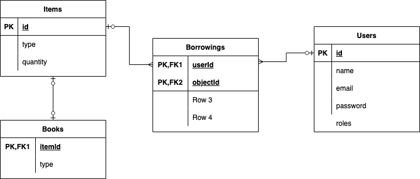

Proiectul va consta intr-o aplicatie de gestionare a obiectelor dintr-o biblioteca: carti; insa aceasta se poate extinde pentru a cuprinde si alte tipuri de obiecte (voi detalia cand voi ajunge la baza de date)
Fiecare persoana se va putea inregistra, pentru a deveni utilizator si a avea permisiunea de a imprumuta carti, astfel vom avea o componenta de authentication, si una borrowingHandler
De asemenea, toti utilizatorii vor putea cauta obiectele din biblioteca, in functie de mai multi parametri => componenta de search
Utilizatorii cu rol de admin vor avea un admin panel, diferit de interfata si functionalitatea pentru un user obisnuit => componenta adminPanel
Baza de date

Fiecare utilizator va avea campurile id(primary key), email(string), name(string), roles(list of strings) (doar admin sau empty list initial, dar se poate extinde) si password(string -> va fi hashed and salted in baza de date)
Obeictele vor avea campurile id(primary key) quantity(unsigned int), type (string) (aici va fi doar book, insa se poate extinde si pentru alte tipuri de obiecte, doar prin adaugarea unei noi tabele)
Cartile vor avea campurile itemId(foreign key pentru tabela Items), title(string), author(string), genre (string)
Imprumuturile for avea campurile userId(foreign key pt Users), itemId(foreign key pentru Items), dueDate(date)
Relatii one to many intre Borrowings - Users si Borrowings - Items, si one to one intre Items - Books
Operatii CRUD
Fiecare user isi va putea vedea propriile imprumuturi, si va putea crea altele noi. Pentru a crea un imprumut nou, ei vor putea alege o perioada mai mica de 2 luni
Fiecare user va putea face query-uri de cautare din toate obiectele disponibile, in functie de parametrii: type, title, author, genre (evident, se pot adauga sau elimina parametri, in functie de tipul obiectului cautat)
Adminii vor putea adauga noi obiecte, vor putea updata obiectele existente (modificarea cantitatii) sau sterge
Adminii vor putea anula / modifica imprumuturi (due date extension / turn in early) => ei vor putea vedea toate imprumuturile, nu doar cele care sunt ale lor